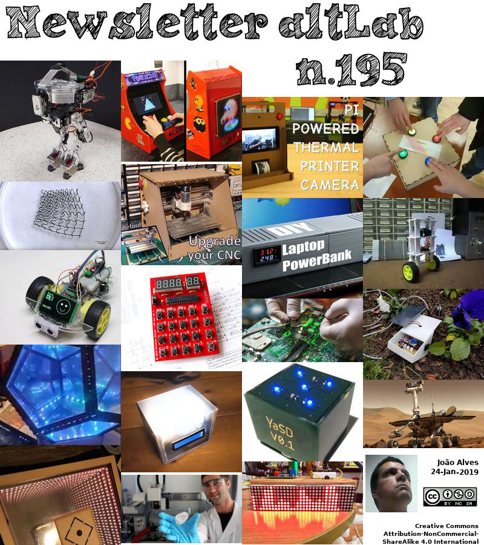

2019-01-24 - Nº 195


Editorial
Esta é a Newsletter Nº 195 que se apresenta com o mesmo formato que as anteriores. Se gostar da Newsletter partilhe-a!
Todas as Newsletters encontram-se indexadas no link.
Esta Newsletter tem os seguintes tópicos:
Faz hoje anos que nascia, em 1798, Karl Georg Christian von Staudt. Este matemático alemão desenvolveu a primeira teoria completa de pontos imaginários, linhas e planos na geometria projectiva. O seu trabalho inicial foi determinar a órbita de um cometa e, com base nesse trabalho, ele recebeu o seu doutoramento. Ele mostrou como construir um polígono regular de 17 lados usando apenas compassos. Ele voltou-se para a geometria projectiva e os números de Bernoulli (descobertos por Jacob Bernoulli). Um trabalho importante em geometria projectiva, Geometrie der Lage foi publicado em 1847. Foi o primeiro trabalho a libertar completamente a geometria projectiva de qualquer base métrica. Ele também deu uma solução geométrica para equações quadráticas.
Faz também hoje anos que nascia, em 1872, Morris Travers. Este químico inglês, enquanto trabalhava com Sir William Ramsay em Londres, descobriu o elemento krypton (30 de maio de 1898). O nome deriva da palavra grega para “oculto”. Era uma fracção separada do ar liquefeito, que quando colocado num tubo de Plücker ligado a uma bobina de indução produzia um espectro com uma linha amarela brilhante com um tom mais verde que a linha de hélio conhecida e uma linha verde brilhante que correspondia a nada visto antes.
Faz igualmente hoje anos que nascia, em 1882, Harold D. Babcock. Este Astrónomo norte-americano conjuntamente com o seu filho, Horace, inventou o magnetógrafo solar (1951), para observação detalhada do campo magnético do Sol. Com o seu magnetógrafo, os Babcocks mediram a distribuição de campos magnéticos sobre a superfície solar a uma precisão sem precedentes e descobriram estrelas magneticamente variáveis. Em 1959, Harold Babcock anunciou que o Sol inverte a sua polaridade magnética periodicamente. Os estudos laboratoriais precisos de Babcock sobre espectros atômicos permitiram que outros identificassem as primeiras linhas "proibidas" em laboratório e descobrissem os raros isótopos de oxigénio. Com C.E. St. John, ele melhorou muito a precisão dos comprimentos de onda de cerca de 22.000 linhas no espectro solar, referindo-os a padrões recém-determinados.
Faz também hoje anos que nascia, em 1902 - Oskar Morgenstern. Este economista e matemático germano-americano popularizou a “teoria dos jogos”, que analisa matematicamente o comportamento do homem ou dos animais em termos de estratégias para maximizar os ganhos e minimizar as perdas. Ele é co-autor de Teoria dos Jogos e Comportamento Económico (1944), com John von Neumann, que estendeu a teoria de jogos de estratégia de Neumann de 1928 para situações de negócios competitivas. Eles sugeriram que, muitas vezes, numa situação de negócios (“jogo”), o resultado depende de várias partes (“jogadores”), cada uma estimando o que todas as outras farão antes de determinar sua própria estratégia. Morgenstern foi professor na Universidade de Viena, na Áustria, de 1931 até a ocupação nazista em 1938), quando fugiu para os Estados Unidos e se juntou ao corpo docente da Universidade de Princeton. As suas publicações posteriores incluíram trabalhos sobre previsão económica e aspectos da defesa dos EUA.
Faz igualmente hoje anos que nascia, em 1931, Lars Hörmander. Este matemático sueco recebeu a Medalha Fields em 1962 pelo seu trabalho em equações diferenciais parciais. Passando cinco anos por escrito, ele produziu um texto "A análise de operadores diferenciais parciais lineares", em quatro volumes (1983-85). Entre 1987 e 1990, ele foi vice-presidente da União Matemática Internacional. Em 1988, Hörmander recebeu o Prémio Wolf. O texto de Hörmander, "Uma Introdução à Análise Complexa em Diversas Variáveis", tornou-se um clássico que lida com a teoria das funções de diversas variáveis complexas.
Por fim, faz hoje anos que nascia, em 1947, Michio Kaku. E um físico teórico norte-americano, futurista e divulgador da ciência (comunicador científico). Ele é professor de física teórica no City College de Nova York e no CUNY Graduate Center. Kaku escreveu vários livros sobre física e assuntos relacionados, esteve presente em programas de rádio, televisão e cinema, e escreve blogs e artigos online.
Faz hoje 15 anos que o Rover Opportunity da NASA se encontra na superfície de Marte. O Rover pousou numa região do Planeta Vermelho chamada Meridiani Planum em 24 de Janeiro de 2004, enviando seu primeiro sinal de volta à Terra por volta das 9h05 da tarde. PST (25 de Janeiro de 2004, às 12h05 EST). O rover do tamanho de um carro de golfe foi projectado para viajar 1.006 metros e operar no Planeta Vermelho por 90 dias (sois) de Marte. Ele viajou mais de 45 km e registou seu 5.000º dia (ou sol) de Marte em Fevereiro de 2018.
Também nesta semana que passou a Boeing anunciou que o seu Veículo Aéreo de Passageiros Autónomo completou o Primeiro Voo. O protótipo do PAV completou uma descolagem controlada, pairando e pousando durante o voo, que testou as funções autónomas e os sistemas de controle de solo do veículo. Os voos futuros testarão o voo directo com asas, bem como a fase de transição entre os modos vertical e de voo directo. Esta fase de transição é tipicamente o desafio de engenharia mais significativo para qualquer aeronave VTOL de alta velocidade.
Na Newsletter desta semana apresentamos diversos projetos de maker assim como um modelo 3D que poderá ser útil. São apresentadas as revistas HackSpace magazine #15, a Hello World issue 7 e a micro:mag issue 3.
 João Alves ([email protected])
João Alves ([email protected])
O conteúdo da Newsletter encontra-se sob a licença  Creative Commons Attribution-NonCommercial-ShareAlike 4.0 International License.
Creative Commons Attribution-NonCommercial-ShareAlike 4.0 International License.
Novidades da Semana
NASA's Opportunity Rover Logs 15 Years on Mars
"NASA's Opportunity rover begins its 16th year on the surface of Mars today. The rover landed in a region of the Red Planet called Meridiani Planum on Jan. 24, 2004, sending its first signal back to Earth from the surface at 9:05 p.m. PST (Jan. 25, 2004, at 12:05 a.m. EST). The golf-cart-sized rover was designed to travel 1,100 yards (1,006 meters) and operate on the Red Planet for 90 Martian days (sols). It has traveled over 28 miles (45 kilometers) and logged its 5,000th Martian day (or sol) back in February of 2018. "Fifteen years on the surface of Mars is testament not only to a magnificent machine of exploration but the dedicated and talented team behind it that has allowed us to expand our discovery space of the Red Planet," said John Callas, project manager for Opportunity at NASA's Jet Propulsion Laboratory in Pasadena, California. "However, this anniversary cannot help but be a little bittersweet as at present we don't know the rover's status." [...]
Boeing Autonomous Passenger Air Vehicle Completes First Flight
"Boeing NeXt program tests prototype to advance safety and technology of urban air mobility Electric vertical takeoff and landing vehicle has design range of up to 50 miles Boeing [NYSE: BA] yesterday successfully completed the first test flight of its autonomous passenger air vehicle (PAV) prototype in Manassas, Virginia. Boeing NeXt, which leads the company's urban air mobility efforts, utilized Boeing subsidiary Aurora Flight Sciences to design and develop the electric vertical takeoff and landing (eVTOL) aircraft and will continue testing to advance the safety and reliability of on-demand autonomous air transportation. The PAV prototype completed a controlled takeoff, hover and landing during the flight, which tested the vehicle's autonomous functions and ground control systems. Future flights will test forward, wing-borne flight, as well as the transition phase between vertical and forward-flight modes. This transition phase is typically the most significant engineering challenge for any high-speed VTOL aircraft. "In one year, we have progressed from a conceptual design to a flying prototype," said Boeing Chief Technology Officer Greg Hyslop." [...]
Outras Notícias
Fast-Recovery Super-Junction MOSFETs from STMicroelectronics Bring Superior Performance to Bridge and ZVS Converters
"STMicroelectronics’ MDmesh™ DM6 600V MOSFETs contain a fast-recovery body diode to bring the performance advantages of the Company’s latest super-junction technology to full- and half-bridge topologies, Zero-Voltage Switching (ZVS) phase-shift converters, and applications and topologies generally that need a robust diode to handle dynamic dV/dt. Fast-Recovery Super-Junction MOSFETs from STMicroelectronics Bring Superior Performance to Bridge and ZVS Converters Leveraging ST’s advanced carrier-lifetime control technology, the MDmesh DM6 MOSFETs have reduced reverse-recovery time (trr) to minimize power dissipation in the diode when turning off after freewheeling. Recovery softness is optimized to enhance reliability. In addition, very low gate charge (Qg) and on-resistance (RDS(ON)), together with a capacitance profile tailored for light loads, allow higher operating frequencies and greater efficiency, with simplified thermal management and reduced EMI. Ideal for equipment such as charging stations for electric vehicles, telecom or data-center power converters, and solar inverters, the new devices enable superior energy ratings with more robust performance and increased power density. Part of the STPOWER™ portfolio, the MDmesh DM6 family comprises 23 part numbers covering current ratings from 15A to 72A, with gate charge (Qg) ranging from 20nC to 117nC and RDS(ON) from 0.240Ω down to 0.036Ω respectively." [...]
Mbed OS 5.11.2 released
"We are pleased to announce the Mbed OS 5.11.2 release is now available. This is the latest patch release based on the feature set that Mbed OS 5.11 introduces. Summary In this release we have added target support for NUCLEO_H743ZI, GD32_E103VB and GD32_F450ZI. We have added fixes for the following reported issues: 8567 Equeue unchain bugs 8913 Build of NUCLEO_F030R8 fails when DEVICE_SERIAL=0 8903 Realtek_RTL8195AM is printing a lot of traces 9196 ESP8266 CTS/RTS fails in stop_uart_hw_flow_ctrl() 9075 K82F QSPI test fails intermittently 9216 Defining MBED_SLEEP_TRACING_ENABLED caused error 9266 Astyle in travis doesn't use .astyleignore 9255 FLASHIAP component tests failed 9207 MCU_LPC546XX - breaks on master 9272 Block device test : skip multi thread part in case of small RAM Support has been added for: PSA APIs on Pelion supported boards A bootloader on the DISCO_F469NI There have also been some updates to improve the quality of the documentation. Important notes: There was an issue with the internal KVStore, identified after the 5.11 release. The fix for this required changes which would normally not be accepted into a patch release." [...]
Arduino and Google launch new Arduino Education Science Kit!
"The Arduino Science Kit Physics Lab, developed in collaboration with Google, is the first official Arduino kit designed for middle school curriculum. The Arduino Science Kit Physics Lab provides middle schoolers (ages 11 to 14) with a hands-on experience, enabling them to explore forces, motion, and conductivity with their classmates. Students can make their own hypothesis like a real scientist, then check their assumptions, and log data thanks to Google’s Science Journal app — a digital notebook for conducting and documenting science experiments using the unique capabilities of their own devices. The kit, based on the MKR WiFi 1010, includes a range of sensors to measure light, temperature, motion, and magnetic fields, as well as a set of props and full access to online course content for teachers and students to conduct nine exciting science projects inspired by popular fairground rides like the Gravitron and Pirate Ship. With the Physics Lab, no prior electronics knowledge is required. Students simply upload their sketch onto an Arduino board using Arduino Create for Chromebook, connect their Android mobile device to the board, build their project, and then use the onboard sensor and plug-and-play modules to simulate the rides’ dynamics." [...]
Ciência e Tecnologia
Ears from the 3D-printer
"Cellulose obtained from wood has amazing material properties. Empa researchers are now equipping the biodegradable material with additional functionalities to produce implants for cartilage diseases using 3D printing. It all starts with an ear. Empa researcher Michael Hausmann removes the object shaped like a human ear from the 3D printer and explains: «In viscous state cellulose nanocrystals can easily be shaped together with nother biopolymers into complex 3-dimensional structures using a 3D printer, such as the Bioplotter.” Once cross-linked, the structures remain stable despite their soft mechanical properties. Hausmann is currently investigating the characteristics of the nanocellulose composite hydrogels in order to further optimize their stability as well as the printing process. The researcher already used X-ray analysis to determine how cellulose is distributed and organized within the printed structures." [...]
Measurement of five flashes from the depths of the universe
"First-time precise measurement of gamma-ray bursts conducted successfully from a space station A detector called POLAR, developed at PSI, has been sent to outer space to collect data. In September 2016, the device was launched into Earth orbit on board the newest Chinese space station. From that vantage point, POLAR recorded so-called gamma-ray bursts flashing in the far reaches of the universe. Gamma-ray bursts are eruptions of extremely high-energy light that to a large extent are not well understood. Their origin, among other things, remains unclear; it is possible that these flashes of energetic light are emitted during the formation of black holes. To better understood gamma-ray bursts, POLAR measured a particular property of their light: the so-called polarisation." [...]
Superconductors due for a tuneup
"Physicists show quantum materials can be tuned for superconductivity Some iron-based superconductors could benefit from a tuneup, according to two studies by Rice University physicists and collaborators. “Our work demonstrates a new design principle for tuning quantum materials to achieve unconventional superconductivity at higher temperatures,” said Rice’s Qimiao Si, the lead theoretical physicist on the studies, which investigate unusual patterns of superconductivity that have previously been reported in iron selenide. “We show how nematicity, an unusual electronic order, can boost the chances that superconductivity will arise from electron-pairing in specific orbitals,” said Si, director of the Rice Center for Quantum Materials (RCQM) and the Harry C. and Olga K. Wiess Professor of Physics and Astronomy. “Tuning materials to enhance this effect could foster superconductivity at higher temperatures.” Electrical current heats wiring, thanks to the jostling of countless electrons, which lose energy each time they bump something. About 6 percent of electricity on U.S. power grids is lost to this heating, or electrical resistance, each year. In contrast, the electrons in superconductors form pairs that flow effortlessly, without resistance or heat." [...]

New light shed on intensely studied material
"The organic polymer PEDOT is probably one of the world’s most intensely studied materials. Despite this, LiU researchers have now demonstrated that the material functions in a completely different manner than previously believed. The result has huge significance in many fields of application. More than 1,500 scientific articles are devoted each year to the conducting organic polymer PEDOT, making it probably one of the world’s most intensely studied materials. This polymer has unique properties, and is highly suitable for use in solar cells, electrodes, light-emitting diodes, soft displays, bioelectronic components, and many other applications. However, most articles are experimental in nature, and only a tiny fraction – fewer than one in a thousand – of the articles provide a theoretical understanding of the various aspects of the polymer." [...]
Graphene's spectacular performance in high-speed optical communications
"Integrating graphene sheets into silicon photonics could form the basis for next-generation data communications. Researchers from the Graphene Flagship initiative have pushed the technology closer to application by demonstrating the world’s first high-speed graphene-based data communication at a data rate of 50 Gb/s. The Graphene Flagship programme aims to act as a catalyst for the development of groundbreaking applications by bringing together academia and industry to take this versatile material into society within 10 years. The importance of integrating graphene in silicon photonics was evident in the joint results produced by the collaboration between Flagship partners AMO GmbH (Germany), the National Inter-University Consortium for Telecommunications (CNIT) (Italy), Ericsson (Sweden), Ghent University (Belgium), the Institute of Photonic Sciences (ICFO) (Spain), imec (Belgium), Nokia (Germany and Italy), the Vienna University of Technology (TU Wien) (Austria) and the University of Cambridge (UK). One-chip wonder Silicon has been widely hailed as suitable for monolithic integration for photonics. However, increasing the speed and reducing the power and footprint of key components of silicon photonics technology has not been achieved in a single chip, to date." [...]
Walking robots made more affordable
"Walking robots could soon assist in search and rescue missions or deliver your groceries now that a new system has been developed to bring a more affordable option to the market. University of Queensland’s Associate Professor Pauline Pounds has explored the possibilities of creating a simplified system to make bipedal robots more accessible and cheaper. “I always wanted to build the amazing walking machines you see in science fiction and I always wondered why they were so hard to build,” Dr Pounds said. “Walking in robots is very complex, and a lot of research and funding has gone into dealing with this complexity. “Famous walking robots such as those developed at Boston Dynamics, Schaft and Honda are expected to have price tags in excess of one million dollars. “Our approach promises to reduce the cost to only a few thousand dollars.” Her system uses control moment gyroscopes to keep the robot upright, independently of where it places its feet, which allows more affordable sensors and actuators to be used." [...]
Graphene and 2D materials on track to innovative applications
"Graphene is a two-dimensional atomic crystal made up of carbon atoms arranged in a hexagonal lattice. At one atom thick, graphene is the thinnest known compound, as well as the strongest compound discovered (between 100 and 300 times stronger than steel), the lightest known material (with one square metre weighing approximately 0.77 milligrams), and extremely flexible. Furthermore, graphene is impermeable to molecules and is highly electrically and thermally conductive – enabling electrons to flow much faster than silicon. It is also a transparent conductor, combining electrical and optical functionalities in an exceptional way. Graphene has a wide variety of potential applications, ranging from electronics to composite materials and is relatively cheap to produce in comparison with other materials. A material for the future This CORDIS Results Pack showcases 12 articles on 6 ambitious cutting-edge EU research projects funded under the EU’s FP7 and Horizon 2020 research programmes relevant to graphene and 2D materials." [...]
Smart fabrics made possible by new metal deposition technique
"Imperial researchers have devised a way to deposit metals onto fabrics and used it to insert sensors and batteries into these materials. A multidisciplinary team of researchers from Imperial College London led by Dr Firat Güder from the Department of Bioengineering have developed an innovative technique to print metals such as silver, gold and platinum onto natural fabrics. We chose applications from a range of different areas to show how versatile and enabling this approach could be Max Grell They have also shown that the technique could be used to incorporate batteries, wireless technologies and sensors into fabrics like paper and cotton textiles. Ultimately these technologies could be used for new classes of low-cost medical diagnostic tools, wirelessly powered sticker-sensors to measure air pollution or clothing with health monitoring capabilities. Metals have been printed onto fabrics, but until now the process has essentially coated the fabric with plastic which renders the fabric waterproof and brittle. Published in Advanced Functional Materials, the research paper describes how a new approach would allow metal inks to cover entire fibres rather than simply coating the surface of the fabric." [...]
Creating a Roadmap for 2D Materials
"The rapid growth of research on 2D materials – materials such as graphene and others that are a single or few atoms thick – is fueled by the hope of developing better performing sensors for health and environment, more economical solar energy, and higher performing and more energy efficient electronics than is possible with current silicon electronics. Technical roadmaps, such as the International Technology Roadmap for Semiconductors (ITRS), first published in 1998, serve as guides for future advances in a particular field and provide a means for organizations to plan for investments in new technology. An invited article in the December online edition of the journal 2D Materials provides a roadmap for the synthesis of electronic-grade two-dimensional materials for future electronic and sensing applications. Led by Penn State, with contributions from five additional universities and national laboratories, the roadmap addresses the grand challenges in 2D materials with useful electronic or photonic properties, and the outlook for U.S. advances in the field. “This article is a review of where we currently are in regard to the synthesis of 2D materials and our thoughts on the top research priorities that need to be addressed to achieve electronic grade 2D materials,” said Joshua Robinson, associate professor of materials science and engineering, whose Ph.D. students Natalie Briggs and Shruti Subramanian are co-lead authors on the report titled “A Roadmap for Electronic Grade 2-Dimensional Materials,” published online today, Jan. 17. “2D materials are touted to be revolutionary for a variety of technologies, assuming the materials are perfect,” he said." [...]
Technique permits scale gains in the production of materials with graphene
"A group of Brazilian researchers have developed strategies to produce polymer-graphene nanocomposites on an industrial scale. The isolation of graphene crystals is one of the most significant recent advances in science and technology, first performed in 2004 and awarded the Nobel Prize for Physics in 2010. However, the creation of graphene nanocomposites with plastics still occurs basically in the laboratory. “On a small scale, solvents and other techniques are used and work well in experiments, but graphene reagglomerates and loses its properties in the machinery used in the plastics manufacturing industry,” said Guilhermino José Macêdo Fechine, principal investigator for the study and a researcher at Mackenzie Presbyterian University’s Center for Advanced Research in Graphene, Nanomaterials and Nanotechnology (MackGraphe) in São Paulo, Brazil. MackGraphe is supported by FAPESP. A paper has been published in eXPRESS Polymer Letters, and a presentation was made to the 23rd Brazilian Materials Science and Engineering Conference (CBECiMat), which took place on November 4-8, 2018, at Foz do Iguaçu, Paraná State (Brazil)." [...]
New Material to Push the Boundaries of Silicon-Based Electronics
"The electronics market is growing constantly and so is the demand for increasingly compact and efficient power electronic systems. The predominant electronic components based on silicon will in foreseeable future no longer be able to meet the increasing industrial requirements. This is why scientists from the university of Freiburg, the Sustainability Center Freiburg and the Fraunhofer-Gesellschaft have joined forces in order to explore a new material structure that may be better suited for future power electronics. The recently launched project »Research of Functional Semiconductor Structures for Energy Efficient Power Electronics« (in short »Power Electronics 2020+«) researches the novel semiconductor material scandium aluminum nitride (ScAlN). Prof. Dr. Oliver Ambacher, director of Fraunhofer IAF and professor of power electronics at the Department of Sustainable Systems Engineering (INATECH) of the university of Freiburg, coordinates the supra-regional collaboration. Three key factors are responsible for the strong growth of the electronics market: the automation and digitalization of the industry as well as the increasing awareness of ecological responsibility and sustainable processes." [...]
Smart microrobots that can adapt to their surroundings
"Scientists at EPFL and ETH Zurich have developed tiny elastic robots that can change shape depending on their surroundings. Modeled after bacteria and fully biocompatible, these robots optimize their movements so as to get to hard-to-reach areas of the human body. They stand to revolutionize targeted drug delivery. One day we may be able to ingest tiny robots that deliver drugs directly to diseased tissue, thanks to research being carried out at EPFL and ETH Zurich. The group of scientists – led by Selman Sakar at EPFL and Bradley Nelson at ETH Zurich – drew inspiration from bacteria to design smart, biocompatible microrobots that are highly flexible. Because these devices are able to swim through fluids and modify their shape when needed, they can pass through narrow blood vessels and intricate systems without compromising on speed or maneuverability." [...]
Photoreactions activate magnetic nanoswitches
"Light induces photoreactions that activate the switch of the magnetic orientation of 2D materials dispersed in water. A way to use light to induce changes in the optical and magnetic properties of water-dispersed titanate nanosheets has been devised by RIKEN researchers1. This opens up opportunities for using liquid crystals based on two-dimensional (2D) materials in smart optical devices. The properties of liquid crystals lie somewhere between those of solids and liquids. For example, they can be fluid like a liquid and yet exhibit a molecular order similar to that of solid crystals. The properties of liquid crystals depend both on their composition and the orientations of the molecules that make up the crystals." [...]
DARPA Explores New Computing Architectures to Deliver Verifiable Data Assurances
"Whether a piece of information is private, proprietary, or sensitive to national security, systems owners and users have little guarantees about where their information resides or of its movements between systems. When a user enters information on a phone, for example, it is difficult to provably track that the data remains on the phone or whether it is uploaded to a server beyond the device. The national defense and security communities are similarly left with few options when it comes to ensuring that sensitive information is appropriately isolated, particularly when it’s loaded to an internet-connected system. “As cloud systems proliferate, most people still have some information that they want to physically track – not just entrust to the ether,” said Walter Weiss, DARPA program manager. “Users should be able to trust their devices to keep their information private and isolated.” Keeping a system completely disconnected from all means of information transfer is an unrealistic security tactic. Modern computing systems must be able to communicate with other systems, including those with different security requirements." [...]
MXene researchers find 2-D transition metal carbides react with water, opening a door to their unknown chemistry
"Researchers at Missouri University of Science and Technology have discovered that 2-D titanium carbide materials, or MXenes, can react with water without the presence of other oxidizers. Their finding may lead to new insights into the unusual chemistry of MXenes and consequently, have impacts on MXenes’ storage and device manufacturing. “Our new findings are important because now we know it is water itself rather than oxygen that MXenes need to be protected from during manufacturing and storage,” says Shuohan Huang, a doctoral student in chemistry at Missouri S&T. MXenes are one of the largest families of 2-D materials. They are a few atom-thick sheets with the structures of transition-metal carbides and nitrides. Their distinctive properties include high electrical conductivity and the ability to disperse in water, a unique combination which earned them a nickname “conductive clays.” Researchers are excited about the potential use of MXenes in energy storage and harvesting applications such as batteries, supercapacitors and triboelectric nanogenerators, which convert wasted frictional energy into electricity, according to Dr. Vadym Mochalin, associate professor of chemistry at Missouri S&T, who is the principal investigator of this project." [...]
5000 times faster than a computer - interatomic light rectifier generates directed electric currents
"The absorption of light in semiconductor crystals without inversion symmetry can generate electric currents. Researchers at the Max-Born-Institute have now generated directed currents at terahertz (THz) frequencies, much higher than the clock rates of current electronics. They show that electronic charge transfer between neighboring atoms in the crystal lattice represents the underlying mechanism. Solar cells convert the energy of light into an electric direct current (DC) which is fed into an electric supply grid. Key steps are the separation of charges after light absorption and their transport to the contacts of the device. The electric currents are carried by negative (electrons) and positive charge carriers (holes) performing so called intraband motions in various electronic bands of the semiconductor." [...]
Mechanical engineers develop process to 3D print piezoelectric materials
"The piezoelectric materials that inhabit everything from our cell phones to musical greeting cards may be getting an upgrade thanks to work discussed in the journal Nature Materials released online Jan 21. Xiaoyu ‘Rayne’ Zheng, assistant professor of mechanical engineering in the College of Engineering, and a member of the Macromolecules Innovation Institute, and his team have developed methods to 3D print piezoelectric materials that can be custom-designed to convert movement, impact and stress from any directions to electrical energy. “Piezoelectric materials convert strain and stress into electric charges,” Zheng explained. The piezoelectric materials come in only a few defined shapes and are made of brittle crystal and ceramic – the kind that require a clean room to manufacture. Zheng’s team has developed a technique to 3D print these materials so they are not restricted by shape or size. The material can also be activated – providing the next generation of intelligent infrastructures and smart materials for tactile sensing, impact and vibration monitoring, energy harvesting, and other applications." [...]
3D printing and metals science combine for stronger, crystal-inspired materials
"Imperial materials scientists have created new artificial materials which combine our knowledge of metals with 3D printing. The findings could speed up the use of 3D printed materials in everything from construction and vehicles to medical devices. 3D printing is often used to produce engineering components. The printed components contain lattice structures – patterns of material laid out like a grid, with repeating nodes and connecting struts, which make them lightweight. However, when traditional types of lattices fail and crack, they do so catastrophically, which limits their use. Researchers suspect that this is because there is only one pattern of lattice throughout the material, and that varying the lattice structures inside could add strength." [...]
Materials Research: Oxide Ceramics with Reversible Properties
"Modern technology could not do without materials that have clearly defined physical properties. A new approach to achieving targeted and at the same time reversible material design using oxygen has now been presented by scientists at Forschungszentrum Jülich. The ceramic material they examined is able to absorb, store and release oxygen, in the same manner as a sponge does with water. In the process, the crystalline substance switches from conductive to insulating behaviour, while at the same time its magnetic properties also change. The researchers envisage possible applications for this material in data storage, sensors and catalysts. Lanthanum strontium manganite, (La,Sr)MnO3, also known as LSMO, is a so-called oxide ceramic material already used in high temperature fuel cells." [...]
3D-Printed Soft Mesh Robots Created
"Structures can contract, reshape and grab small objects while floating on water surface Researchers at North Carolina State University have created 3D-printed flexible mesh structures that can be controlled with applied magnetic fields while floating on water. The structures can grab small objects and carry water droplets, giving them the potential to be useful as soft robots that mimic creatures living on water surfaces or that can serve as tissue scaffolds for cell cultures. “This research shows capabilities in the emerging field of combining 3D printing and soft robotics,” said Orlin Velev, S. Frank and Doris Culberson Distinguished Professor of Chemical and Biomolecular Engineering at NC State and corresponding author of a paper describing the research. To create these structures, the researchers made an “ink” from silicone microbeads, bound by liquid silicone and contained in water. The resulting “homocomposite thixotropic paste” resembles common toothpaste, which can easily be squeezed out of a tube but then maintains its shape on your toothbrush without dripping. The researchers used a 3D printer to shape the paste into mesh-like patterns." [...]
Multicolor Holography Technology Could Enable Extremely Compact 3D Displays
"Lens-free holography method could bring color 3D displays to augmented reality glasses and smartphones Researchers have developed a new approach to multicolor holography that could be used to make 3D color displays for augmented reality glasses, smartphones or heads-up displays without any bulky optical components. In Optica, The Optical Society's journal for high impact research, researchers from Duke University, USA describe how they encoded a multicolor image onto a 300-by-300 micron hologram in a 2D waveguide structure, a very thin structure that guides light. The computer-generated hologram produces complex multicolor holographic images when the grating coupler is illuminated by red, green and blue light. “The hologram could be embossed directly onto the lenses of augmented reality glasses to project an image directly into the pupil of the eye without requiring any bulky lenses, beam splitters or prisms,” said Daniel L. Marks, a member of the research team. “It could also be used to project a 3D image from a smartphone onto a wall or nearby surface.” The new fabrication method encodes holograms in a material that is compatible with integrated photonics technology. This means that the holographic devices are easy to mass manufacture with the same fabrication methods used to make computer chips." [...]
Modelos 3D
Com a disponibilidade de ferramentas que permitem dar azo a nossa imaginação na criação de peças 3D e espaços como o thingiverse para as publicar, esta rubrica apresenta alguns modelos selecionados que poderão ser úteis.
Bitbeam library
"Openscad Bitbeam library for easy create Bitbeam https://bitbeam.org/, M-Bitbeam http://www.tfsoft.cz/m-bitbeam/, LEGO® Technic or Clementoni® compatible parts. I create this library because some other libraries don't have all what i want. First I create my own extends, that i create one library with full functionality which I want. Library was updated primary in github.com repository. " [...]
Documentação
A documentação é parte essencial do processo de aprendizagem e a Internet além de artigos interessantes de explorar também tem alguma documentação em formato PDF interessante de ler. Todos os links aqui apresentados são para conteúdo disponibilizado livremente pelo editor do livro.
HackSpace magazine #15
"Lights, Camera, Flames! We journey inside the underground bunker of explosive inventor Colin Furze to learn about his record-breaking makes. We also delve further into the world of electronics as we investigate filters, find the best motor controllers for your next project and more. Programming embroidery machines Light painting Fermenting vegetables Casting LEDs" [...]
Hello World issue 7
"With Scratch 3 out now, Hello World issue 7 has been investigating what’s new, and what you can do with it. As always, our collection of experts have ideas, opinions and tips to help you bring Scratch to your students. Also in this issue: Scratch 3: ideas, implementation, questions, and hands on Get students making their own short animated film All about the new National Centre For Computing Education Teaching programming: a starter guide" [...]
micro:mag issue 3
"Today, we’re excited to announce the release of micro:mag Issue 3! We’ve got an amazing Issue for you this time round, packed full of amazing articles by our awesome community. Here is a quick look at what we’ve got to offer this time round. Enjoy Issue 3! 10 Amazing micro:bit Projects! This issues Cover feature is “10 Amazing micro:bit Projects”." [...]
Projetos Maker
Diversos Projetos interessantes.
How to Make a Pogo Pin Test Jig
"If you end up buying a pick and place to assemble PCBs (or even if you're doing it by hand) you'll need to test out your boards! If you have an assembler do it for you, its still probably a good idea to have a jig you can give them. A good jig will tell you whats going right and whats going wrong. In this tutorial I will show how I designed a very basic jig with a "tested good" audible indicator. The board its testing is very simple but the basic premise can be expanded to large projects with ease. " [...]
Low Power Weather Station
"Now in it's third version and having been tested for over two years, my weather station gets upgraded for better low power performance and data transfer reliability. Power consumption - not a problem in the months other than December and January, but in these very dark months the solar panel, although rated at 40 Watts, was unable to keep up with the demand of the system ... and most of the demand came from the 2G FONA GPRS module which transmits the data directly to the interwebs. The next problem was with the FONA GPRS module itself, or more probably the cell phone network. The device would work perfectly for weeks / months, but then suddenly stop for no apparent reason. Apparently the network does try to send some kind of 'system update info' which, if not accepted, causes the device to get booted off the network, so GPRS is not really a maintenance free solution for data transmission. It's a shame because when it did work, it worked really nicely." [...]
VGA Video out on BluePill
"One major limitation during the development of an embedded system, especially for programmers who are used to PCs, is the lack of video output. That’s exactly what Vidout provides, using only 24% of the CPU on a STM32F103. It would be great to be able to be able to, at least temporarily, add video to a system during development and then remove it when it goes to the field. Unfortunately, creating video output is generally a rather resource intensive activity, and not one that can normally be patched in for development only. It is also ‘Hard Realtime’, in that the generation of video output must meet tight timing constraints if the display is to look right. Over the years I’ve built a lot of systems which I’ve claimed to have Realtime characteristics, but even so I’ve never really bumped against the limits of what is possible on a commodity processor, so, with a few evenings free over the Christmas break, I thought I’d see how far I could get at implementing a VGA output for debug use on a pretty much bottom-of-the-barrel CORTEX-M3; The STM32F103C8 based Bluepill board." [...]
Sunrise Alarm Clock With LCD Display and Bluetooth App
"Wintertime can be sad. You wake up, its dark and you have to get out of bed. The last thing you want to hear is the annoying sound of your alarm clock. If you, like me, have trouble waking up in the morning this alarm clock is just what you need. In this tutorial, we are going to build a Sunrise Alarm Clock. It's an alarm clock like any other in that you can set the hour and minute you want to wake up, but with the benefit of using light to brighten up your bedroom over a period of time like a sunrise to wake you up instead of an annoying buzzer!" [...]
Floppy disk interface for Raspberry Pi
"This project is to allow the direct connection of floppy disk drives with 34 pin ribbon cables to the Raspberry Pi for the purpose of reading floppy disks. It controls the drive using GPIO and samples the read data pin using SPI to obtain a forensic level capture of the raw magnetic flux transitions on the floppy disk. Initially this was to read my BBC Micro 5.25 inch disks formatted in Acorn DFS, but I've also been able to read and extract data from ADFS, DOS and Commodore 64 5.25 inch disks. The Cumana dual 5.25 inch disk drive (built November 1985) I'm using is capable of reading multiple different formats. I've read both 40 and 80 track 5.25 inch disks, both using the 40/80 track selector switch on the back and also by double stepping. These tracks are spaced at 48 and 96 tpi respectively." [...]
How to Make Battery Monitoring System With Over Discharge Protection & Battery Level Indicator
"In this project i will show how to build a Battery Monitoring System with Over Discharge Protection & Battery level Indicator. If you prefer watching video then i have embedded the same or if you like reading please continue with the post. " [...]
8x16 LED Matrix Pong Game (2 Paddles Per Player Version)
"I have been inspired by many variations of the classic Pong game implemented on Arduino utilizing an 8x8 LED matrix. In this instructable, I will show you how to build my favorite Pong version which has two paddles - striker and goalie - per player. Since an 8x8 LED matrix has very limited spaces (or dots), I will be using 8x16 LED matrix instead on this project. To simply wiring, I will be using two 8x8 LED matrix with built-in MAX7219 and a single potentiometer per player for paddle control. " [...]
TTGO ESP32 LoRa Board With DHT22 Temperature and Humidity
"My goal is to collect data over a larger distance than achievable with protocols like Wifi. I need a large amount of nodes and I also want to power the senders with batteries for the simple reason I do not have electricity where I want to collect data. The object I want to monitor is a big farm with distances over 1 Km. In short I need: Battery powered low-power nodes Long distance range Possibility to hook up several sensors like air temperature/humidity, soil temperature/humidity, amount of light and maybe CO2 levelsAffordable since I may need a lot of nodes to do proper monitoring on several hectares. I am thinking about at least 8 nodes per hectare.A way to collect and present the data. For this purpose I am tinkering with open source domotic software like Domoticz." [...]
LoRa Climate Monitor: Easy, Open, Low-Power and with Graphs
"Temperature, humidity, lux, pressure. Create LoRa node under 30 minutes. No wiring, no coding. With Ubidots you add graphs and widgets. Story Monitoring distant places was never easier. Thanks to LoRa network you can have device working years on batteries." [...]
Motor Driver for Omni-Wheels Robot
"This project is for a three omni-wheel robot using two TB6612FNG drivers. Story Already all know that for management of electric motors by means of the microcontroller, it is necessary to use so-called “driver” which is based on the principle of operation of the H-bridge.The most common scheme used as a driver is L298N, with it you can find a lot of ready-made modules and use them in your project. But this chip is strongly heated in the process, so it is always installed on the radiator to compensate for heat and not overheat the chip. Therefore, to create a new control driver was chosen dual-channel driver TB6612FNG in SSOP24, it is very compact and does not have large thermal emissions, so the radiator is not necessary. It has the following input parameters : - Maximum motor voltage: 15 V - Maximum output current: 1.2 a / 3.2 a(peak) - Driver supply voltage: 6 V - Control voltage: -0.2 V to 6 V" [...]
ST Connect (Dike Monitoring)
"ST Connect is an autonomous connected object that collect and send data, in order to monitore dikes in the Barcellonette. #PolytechSorbonne Story Introduction During our studies at Polytech Sorbonne in 2018, Earth Science teachers needed to monitor dikes in the Barcelonnette, a municipality of France in the south of the Alps. They asked us to find a solution to collect regularly data such as ground and air temperature and humidity, pressure and magnetic field in order to detect landslide. We chose to design an autonomous connecting object that send data they need on a website, where it will be available to consult on. This object will be put on dikes, and it has to works without human interaction except a single visit per year. Specifications As Earth teachers tell us, to monitor dikes, they need to be able to consult 6 physical measures : Air temperature Air humidity Ground temperature Ground humidity Local magnetic field Pressure variations (to detect altitude variations) We will use sensors to get data and a communication module to send it on a website." [...]
7-Segment Clock with Arduino Nano + DS3231 + LDR
"Another clock project with 1, 2" matrix display. Story Intro In times where you always have a clock on your wrist, be it a watch on your wrist or a smartphone, the Arduino Uno/Nano is a bit dull. You otherwise have NTP server synchronized devices in this article outside, which are constantly online via your Internet connection. Story One of my friends refused for personal reasons a device with WiFi connection in his bedroom and so I have the Arduino equipped with a separate clock. Choose the right product I was surprised how many different products even Adafruit had available: depending on the desired tension, as well as with different precision! Here I decided for two products: the cheaper DS1307 and the probably more precise DS3231." [...]
Easy Very Low Power BLE in Arduino Part 2 -- Temperature/Humidity Monitor
"This tutorial is a practical application of Part 1 Building Very Low Power BLE devices made Easy with Arduino by constructing a Very Low Power BLE Temperature and Humidity Monitor. The monitor will run for years on Coin Cell or 2 x AAA batteries, even longer with solar assist. This tutorial covers tuning the BLE parameters for low power consumption and how to power you device from battery OR battery + solar OR solar only. As well as displaying the current temperature and humidity, the monitor stores the last 36 Hrs of 10min readings and the last 10 days of hourly readings. These can be charted on the your Android mobile and the values saved to a log file. No Android Programming is required, pfodApp handles all of that." [...]
ICSP Connector for Arduino Nano Without Soldered Pin Header But Pogo Pin
"Make a ICSP connector for Arduino Nano without soldered pin header on the board but Pogo Pin. Parts 3×2 Pin Socket x1 — A Pitch 2.54mm Dupont Line Wire Female Pin Connector Housing Terminals x6 — B P75-E2 (1.3mm Conical Head) Spring Test Probe Pogo Pin 1.0mm Thimble x6 — C 2mm Heat Shrink Tube x6 — D Clothes Peg — E" [...]
Viewing ARM CPU activity in real time
"n this blog I take the process one step further, and add a graphical front-end, that shows the CPU activity in real time; if you want to see it in action, take a look at this video. Hardware The target system in the demonstration is a ‘blue pill’ STM32F103 board, with a 7-segment display and pushbutton. This CPU board is particularly convenient because it has a 4-pin connector with SWD clock & data; it can be seen on the right-hand side of the photograph above. " [...]
Dot Jump Game (without Using Arduino)
"Hi there! I am Shivansh, a student at IIIT-Hyderabad. I am here with my first instructable which is a game inspired from Google Chrome's Dinosaur Jump game. The game is simple: Jump across incoming obstacles in order to score a point. If you collide, you loose and the score resets. The highlighting feature of this project is that there is no use of an Arduino or any other microcontroller." [...]
PressKill: an Arduino Game
"PressKill is a physical game for four players I designed and made using an Arduino for a school project. The making of the game involves programming, soldering, making vector plans, laser cutting and some gluing. Wanna make a rad game to play with friends? Read on! Rules for the game: When any player presses their button, they get a point and the Deadzone starts.When any player presses their button during the Deadzone, they loose and are out of the game.5 seconds after its start the Deadzone ends. There is no indication of this.The first player that has five points or is the last to stand, wins." [...]
DIY Digital Clock With 7 Segment LED Display
"Hey guys, Welcome to Being Engineers. Hope you all are going great. This will be a short and simple project about how to make a digital clock using Arduino. Previously We have made a binary clock using charlieplexing concept. You can find the link to that tutorial in the later part of this instructables. There are countless number of ways to make a digital clock using Arduino or say any kind of microcontroller." [...]
Interactive Infinity Mirror
"The assignment for this class was simple yet complicated: Make something interactive with an Arduino. It had to be designed well, technically challenging enough and original for as far as original ideas go these days on sites like Instructables. From the start, I was interested in LEDs. My project would have to incorporate something with LEDs, so the first thing I thought of were these LED visualizers which use music as a source to indicate the loudness per frequency for instance. I quickly realized that the time we had to finish this project was pretty short and I wanted to make a visualizer that would have each led respond individually to the music. That would take way too long so I decided to do something else." [...]
Infinite Disco
"In this project, I made an infinity mirror based on a dodecahedron that reacts to sound. Essential materials: Arduino Uno 3mm thick 100x50cm MDF 2mm thick 100x50cm plexiglass 3 meter WS2812B LEDstrip 60 LEDs/m Sound Detection Sensor Module 3-PIN Thin electric wire (10ish meter total) Breadboard Perfboard/stripboard Simple rectangular rocker switch Wall plug to 5V 8A adapter 220Ω resistor 1 m^2 one-way mirror film (enough to cover the plexiglass pentagons) 470uF 16V capacitor Optional materials: Spray paint Tools: Soldering tools Somewhere to laser-cut (you could probably figure saw it with a lot of patience, but laser-cutting is advised) Multimeter Soap and water Small window wiper Scissors Hobby knife/Stanley knife Ruler Clear glue (or any strong glue you prefer) Insulation tape" [...]
Securely Connecting an Arduino MKR WiFi 1010 to AWS IoT Core
"In this tutorial, you'll learn how to connect your Arduino MKR WiFi 1010 (or MKR 1000) board securely to AWS IoT Core. Story Introduction AWS IoT Core is a managed cloud service that lets connected devices easily and securely interact with cloud applications and other devices. AWS IoT Core can support billions of devices and trillions of messages, and can process and route those messages to AWS endpoints and to other devices reliably and securely. Devices can connect to AWS IoT Core using the following protocols: HTTP, WebSockets and MQTT. This tutorial will walk you through how to connect an Arduino MKR WiFi 1010 (or MKR1000) board securely to AWS IoT Core using the MQTT protocol. MQTT (Message Queuing Telemetry Transport) is an extremely lightweight M2M (machine-to-machine) connectivity protocol which provides a messaging subscription and publish transport." [...]
ESP32: SIM800L and Barrier Sensor
"Today Ill discuss an assembly that functions as an alarm and automation together, using the SIM800L. The modem is GPRS and needs a SIM card. We can say this is like a "cell phone," but its very cool. Its extremely cheap and allows you to develop amazing projects. I'll introduce you to the assembly and source code with ESP32, SIM800L, and a barrier sensor, in addition to making calls and sending alerts via SMS to smartphones. " [...]
PIXELCADE - Mini Bartop Arcade With Integrated PIXEL LED Display
"A huge thanks to Tobias for posting the original laser cut CAD design for this project. This project leverages the design from Tobias with the following modifications: An integrated PIXE: LED ART display that changes with the selected RetroPie game Laser cut side art inlays Audio amp with volume control knob Shutdown/Restart Button Acrylic vs. WoodNote that the instructions from Tobias are very clear on how to assemble the case so refer to his Instructable when in doubt. All laser cut .SVG files, software scripts, LED GIF images and animations, wiring table, and artwork for this project are here in GitHub. Parts 1x Arcade Joystick 4x 30mm Arcade Buttons 1x momentary panel mount push button (.62" mounting hole) 6x momentary panel mount push buttons (.47" mounting hole) 1x 2.1mm Panel Mount DC Jack (.33" mounting hole) 1x Rocker On/Off Panel Mount Switches (you'll need 2 actually but the PIXEL:Maker's Kit comes with 1) 1x Raspberry Pi 3+ 1x microSD card (128 GB is a good size for this project) 1x Official Raspberry Pi Monitor 1x PIXEL: LED ART Maker's Kit (LED Matrix Driver Board) 1x 32x32 P4 Pitch LED Matrix 5" x 5" - Adafruit or other sources 1x Audio Amplifier 2x Mini Oval Speakers 35mm x 20mm 1x Stereo audio cable (right angle is better but normal will fit and is ok too) 2x USB Panel Mount Cable A-A 6x Super Bright 5mm White LEDs (for back lighting the marquee) 6x 220 ohm resistors 1x Right angle DC power jack 1x microUSB jack (use an old microUSB cable and chop off the large USB side) 1x Bottle of India Ink 1x Mr. Clean Magic Eraser Sponge Blue Painter's Tape Screws, Nuts, Stand-Offs 8x 4/40 x 3/16" pan head screws (for maintenance ports) 2x 4/40 x 7/16" pan head screws ? 7x M3 screws x 10mm 4x M3 screws x 5mm (for joystick mounts) 4x M3 square hex nuts (for joystick mounts) 8x 2/56 x 1/2" pan head screws black (for speakers) 8x 2/25 nuts (for speakers) (2) Hex Stand-Off Aluminum, 1/4" Hex, 1-1/8" Long, 4-40 Thread (4) Hex Stand-Off Aluminum, 1/4" Hex, 5/8" Long, 4-40 Thread 2x 4/40 x 3/8" Nylon Screws 4x 4/40 Nylon Nuts 4x rubber bumper pads for the bottom Acrylic & Glue 4x 12x20" Black Acrylic Sheet , 1/8" thick 4x 12x20" Red Acrylic Sheet , 1/8" thick 1x 12x20" White Acrylic Sheet - 1/16" thick 1x 12x12 Translucent Smoke Acrylic Sheet, 1/8" thick (optional LED matrix diffuser) 1x 12x12 Clear Acrylic Sheet, 1/8" thick Misc colored sheets depending on desired arcade character inlays (optional) Acrylic Cement Glue Acrylic Cement for Capillary Application Low Density Polyethylene Bottle Applicator Optional Kaptop tape (for securing the cables to the Pi header) 1x USB Audio Adapter (this is not really needed, while the Pi audio is known to be poor, I can't really tell the difference with this one) Dupont Female Pin Crimp Terminals 2.54mm Pitch (for making your own cables with DuPont connectors that plug into the Raspberry Pi GPIO 40-pin header but you can also just use off the shelf cables and splice them which is cheaper Dupont Terminal Crimper Tools Laser Cutter (I used a Glowforge with a 19.5" x 11 cutting area) 4/40 Tap Tool (for tapping eight 4/40 holes for the maintenance ports)" [...]
PCB BOT (Line Following, Obstacle Avoiding & Bluetooth Controlled Robot in a Single PCB)
"Lots of line followers are available on the internet. Most of them are made using separate modules. Several single PCB designs are available but all three functionality like Bluetooth control, obstacle avoiding and line following is not available in a single PCB design. In this instructable, I am going to share the recipe of my single PCB line follower with Bluetooth control and obstacle avoiding functionality. The bot is completely opensource and you can replicate it easily. I will provide all the required materials in the following steps including schematic, PCB design file and Arduino source code." [...]
Make Your Own Smart Mirror for Under $80 - Using Raspberry Pi
"In this project, we will be building a smart mirror that will show you helpful information while you are getting ready in the morning. The whole thing should cost under $80 making it decently affordable for most people. This guide will only teach you how to build your own smart mirror, from start to finish. " [...]
FaceBot
"This guide will show you how to create a low-cost ($39) collision avoidance robot with a face on the font. We do this by using a new low-cost, bright OLED display. Our students love to add faces to their robots. They like to draw smiley faces that change based on what the robot is doing. There are several small low-cost robots available for under $25 that allow you to teach the basics of computer science. One of the problems with these robots is they don't provide transparency as to what is going on inside the robot while you are building it." [...]
Gas, Carbon Monoxide, Motion and Water Detection
"Detect gas, carbon monoxide, motion and water leaks with this multipurpose project. Story I am building this project to play with sensors I've never used before: MQ5 gas sensor MQ7 carbon monoxide sensor a PIR motion detector a water leak sensor I have added certain switches in the firmware to enable you to activate or deactivate individually any of the sensors so you can pick and choose only the ones you really want to use. Each sensor can generate an alarm and you can use that alarm in any way you want, for instance: an email or a notification on your phone. The microcontroller I'll be using a Particle Photon. The Photon is a $19 (now only $15.20?) tiny Wi-Fi IoT device for creating connected projects and products for the Internet of Things." [...]
DIY LED Dot Matrix Scrolling Display Using Arduino
"In this Instructable, I will show how I make a DIY LED Dot Matrix Scrolling Display using Arduino as MCU. This kind of displays featured on Railway Station, Bus Station, Streets, and many more places. There usually Red LED dots which altogether makes a character. One by one character builds a sentence and the combination of those sentences display a message to the user. Here I am gonna make a 32 x 7 LED Dot Matrix Display which can show a combination of A-Z character, 0-9 numbers and some special characters. So, Let's get started" [...]
DIY Laptop PowerBank
"In this project I will show you how to create a Laptop PowerBank. It mainly consists of a Li-Ion battery pack and one buck and boost converter. This way the PowerBank can get charged up through the Laptop power supply and aftewards charge up the Laptop directly to give it an additional run time of 3 hours. Let's get started! " [...]
Keyboard Injection/Auto Type Your Password With One Click!
"Passwords are hard... and remembering a secure one is even harder! On top of that if you have along, convoluted password it will take time to type. But fear not my friends, I have a solution to this! I Created a little auto-typing machine that will output the passwords into the computer. Now there is no need to remember stuff or being a fast typer. " [...]
Yet Another Smart Dice (YASD)
"What is YASD? Another new electronic dice with smart features? Yes and no. Yes - YASD uses LEDs to display randomly generated numbers in a dice style. No - YASD is not in itself a finished product. It should rather show which printed circuit board technologies are possible." [...]
32-Band Audio Spectrum Visualizer Analyzer
"This project is for making a 32-band audio (music) frequency spectrum analyzer / visualizer using Arduino. This project is for making a 32-band audio (music) frequency spectrum analyzer / visualizer using Arduino. Expected audience of this project is any audio enthusiast, student or a beginner who has basic understanding of electronic components, Arduino and C programming. Components used in this project are low cost items and are easy to assemble. Main features of this frequency spectrum analyzer Uses easily installable libraries “arduinoFFT” and “MD_MAX72xx” Five different display modes are supported which can be switched with the push button Both left and right channels of audio signal are mixed so that you don't miss any beat Prototype use 32x8 LED matrix display, this can be changed and easily modified Audio can be fed from headphone output or Line-out of music system / amplifier Components required - Arduino Nano or Uno (I tried with Nano and Uno, must work with other models as well) - 32 x 8 LED matrix display - 1 no - Push button switch - 1 no (normally comes with Arduino kit) - 100nf capacitor - 2 nos - 5 kilo ohms resistor - 3 nos - 10 kilo ohms resistor - 1 no - 100 kilo ohms resistor - 2 nons - 5 volt power supply (usb supply will do) Resistor values are not very strict, you may choose any closest value. Please make sure R1 & R2 (refer schematic) are of same value." [...]
Wireless Remote Control with micro:bit
"In this tutorial, we will utilize MakeCode's radio blocks to have one micro:bit transmit a signal to a receiving micro:bit on the same channel. Eventually, we will control a micro:bot wirelessly using parts from the micro:arcade kit! " [...]
Upgrade Your CNC
"CNC machines are more accessible than ever, with the large range of cheap CNC machine kits from China. The most common type are the 1610, 2416 or 3018 types, referring to the dimension of their machine bed. While they are great machines for their price, their performance is not that terrific. With a few upgrades however, the quality and safety can greatly be improved to turn it into a very potent CNC machine! In this instructable, I will walk you through the upgrades I made to my machine, including: Adding safety features Upgrading the spindle to cut aluminium Adding bluetooth control Adding an enclosure Adding manual controlWe will start this guide with an assembled CNC kit. There is enough documentation already for the assembly of these kits, so I will focus on the upgrades only." [...]
LED Matrix + Motion Sensor Door Display
"This project combines the WS2812B RGB LED matrix and PIR motion sensor to greet visitors with a text. This project combines 3 WS2812B 8x8 RGB LED matrices and a PIR motion sensor to greet visitors with a text saying "Happy Holidays & Happy New Year!" when they are close enough to the door and display a set of effects like a screensaver on monitors when the sensor is not detecting anyone nearby. It is controlled by an Arduino UNO and powered by a 5v 30a power supply. I kitbashed or combined 3 sets of codes. The ones from the FastLED library DemoReel100 Example for the Idle/Standby Effects." [...]
The KIM Uno - a 5 Microprocessor Dev Kit Emulator
"The KIM Uno is a portable, software defined dev kit for (retro) microprocessors. But let me introduce the idea of it by going back in time: Back in late 2018 it came to my mind, that I wanted to build a small portable microprocessor dev kit, just like the famous KIM-1 from MOS Technology, Inc. and designed by Chuck Peddle who was also involved in creating the 6502 CPU. But building a "bare-bone" dev kit with discrete logic components was no option since it needed a big power supply (since those ancient devices tend to take some serious current) and also the development would be very time intensive. And I want it now! Therefore, I designed the KIM Uno as a portable device, which fits in one hand and is powered by two CR2032 batteries. It uses the ATMega328p ("Arduino") microcontroller running at 8 MHz to emulate (or simulate) a desired CPU." [...]
Arduino Self-Balancing Robot with MPU6050 and L293
"An Arduino-based, self-balancing robot with MPU6050 and L293. I have made this robot on the basis of the instructions from Luka Gabric http://lukagabric.com/arduino-self-balancing-robot/. Because I use cheap chinese gear motors to drive there was a problem with resetting the Arduino, so I decided to install ceramic capacitors of 0.1 microF between "+" and "ground" and problem was sloved and. After that modification, robot functioning great. " [...]
Pi-Powered Thermal Printer Camera
"Do you miss your old Polaroid instant camera, or your old Gameboy Classic's black and white camera? So do we, when we feel really nostalgic! In this Instructable, we will show you how to make your own instant camera using a Raspberry Pi, a Pi camera and screen and some electronics and a bunch of cardboard!. For this project, we used the following supplies: A Raspberry Pi 3B or 3B+ with microSD card a 3 amp, 5V microUSB power supply An official Raspberry Pi touchscreen A USB thermal printer - we used one of Adafruit's tiny thermal 3D printer A switch - we used one of Adafruit's arcade button from a previous project, but any switch will do We also used the following equipment: A third hand tool, to hold your electronics while you solder Pliers - the flat, needlenose and cutting kinds A wire stripper - to save you time prepping wiring A soldering iron and solder" [...]
How to Use Wemos ESP-Wroom-02 D1 Mini WiFi Module ESP8266 + 18650 by Using Blynk
"Specification: Compatible with nodemcu 18650 charging system integration The indicator LED (green means full red means charging) can be used while charging Switch control power supply SMT connector can be used for sleep mode · 1 additional LED programmable (gpio16) 0.5a charging current 1A output Overcharge protection Over discharge protection 10 digital pin read/write/interrupt/PWM/I2C/line support (except D0) If the battery is in the wrong direction, the charging chip will be destroyed. Features : One AD inputs. Micro USB inputs. One programmable LED (D0). AUTO PROGRAM circuit.ESP8266 (ESP-WROOM-02 With TELEC) is equivalent to the NodeMCU. Analog Input (AD): Built-in dividing resistor (AD = 220K – ADC – 100K = GND)." [...]
Music Reactive RGB Using Arduino
"A party ain't no party without David Guetta or Martin Garrix and some super cool lighting. But do you know what makes a party even better? Lights that dance to Martin Garrix! Yes, you heard us right! These DIY music reactive LED lights are precisely what you need to make your party supercalifragilisticexpialidocious! And the best part?" [...]
Keypad Module Piano With RGB LED
"IntroHello ladies and gentleman, welcome to my very first instructable! Today, I will be teaching you how to create a piano with main components being a keypad module and a piezo buzzer and have it able to play DO-RE-MI and so on. The keypad module most often intended purpose, is to be a keypad combined with an arduino RFID to create a safe box for valuable items. In this case I changed the keypad, instead of protecting something I decide to use to speak the simple joy and music. Idea ConceptThe idea concept for this creation, evolve from a simple happy memory while playing the xylophone when I was younger in music class. The amount of joy and excitement running through my body was at its peak, I mean every kid was easily satisfied and my satisfaction was playing the xylophone." [...]
7.4V Two Step Lithium Battery Charger Circuit - CC and CV mode
"The advancement in Electric Vehicles, Drone and other mobile electronics like IoT Devices seems to be promising for the future. One common thing among all these is that they are all powered by batteries. Following Moore’s law the electronic devices tend to become smaller and more potable, these portable devices should have their own source of power to operate. The most common battery choice for portable electronics today is Lithium Ion or Lithium Polymer Batteries. While these Batteries have a very good charge density they are chemically unstable under harsh conditions hence care should be taken while charging them and using them. In this project we will build a Two Stage Battery charger (CC and CV) that could be used as to charge Lithium ion or lithium polymer batters." [...]
88. Arduino yun web server ajax control device
"In this project we will see how it is possible to create an interactive web page with Arduino Yun, to control and monitor different devices. Let's make a web page interactive to remotely control home devices via Arduino yun In this project we will see how it is possible to create an interactive web page with Arduino Yun, to control and monitor different devices at home. Introduction: The system has automatic and manual control of lights, climate and various sensors, including a hall sensor and a PIR sensor. Control and monitoring is done via a dynamic and interactive HTML web page. More web pages in HTML format together with the relative javascript and CSS are allocated on a micro-SD memory card and inserted in the appropriate slot on the Arduino Yùn and managed via the web server inside the Linino operating system, which is equipped with the card. The web page is updated with a delay of about 3 seconds, automatically, both when you perform some direct action (for example when you press the switches on the web page) and if something happens on the hardware side." [...]
Flat Panel Switchboards
"Digitizing household mechanical switches with CoolMOS C7. Switchboards are available in all forms and designs. They find application in every household electrical wiring. Switchboards provide electrical insulation from the live circuit, but sometimes these boards fail to perform their jobs under certain circumstances. The reasons could be many as follows: 1. material used in switch may degrade over time and lose their dielectric property. 2." [...]
CoolSWITCH - Wireless High Power Smart Switch
"Designed for Industry 4.0, but suitable for smart home too. Features WiFi control, current measuring, PWM, soft start / stop and safety. Story Concept & Features Industry 4.0 is about smart equipment communicating with each other. Also equipment will have self maintaining capabilities, by collecting data about their condition and letting an AI to predict malfunction. A wireless switch (kind of a wireless solid state relay) with smart functions like current measuring, will ease the creation of smart equipment. It should be easy to integrate in existing equipment and by measuring the current consumption of the device, using AI and big data analysis malfunction could detect with high precision." [...]
ATtiny10 Thermometer
"This is a small battery-powered thermometer that displays the temperature as a series of red and green flashes on an LED. The thermometer consists of an ATtiny10, a DS18B20 1-wire temperature sensor, and a bi-colour LED. To avoid the need for a digital display, and minimise current consumption, the thermometer pulses the temperature as a series of red or green flashes on the bi-colour LED. I designed it so I could seal it in a small waterproof enclosure and put it outside the window, allowing me to see the outdoor temperature from inside. It incorporates several power-saving features to enable it to run for over a year on a CR2032 button cell. Introduction Some time ago I designed a flashing thermometer based on an ATtiny85, using the ATtiny85's internal tempreature sensor: Flashing Thermometer." [...]
Simple MQTT Message Board with Arduino Ethernet
"Build a simple MQTT message board with Arduino Ethernet. " [...]
That's all Folks!